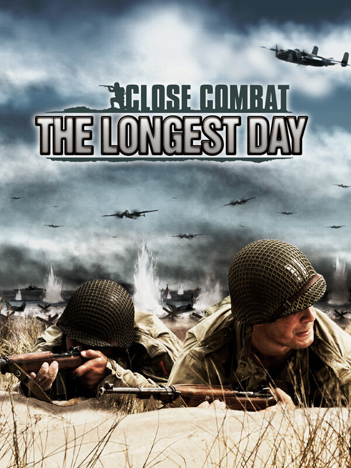

Close Combat: The Longest Day
Close Combat: The Longest Day
Details
|  | |
| Playtime | Not Played |
| Last Activity | Never |
| Added | 2023-08-11 0:29:07 |
| Modified | 2023-08-11 0:36:08 |
| Completion Status | Abandoned |
| Library | Steam |
| Source | Steam |
| Platform | PC (Windows) |
| Release Date | 2011-12-31 |
| Community Score | |
| Critic Score | |
| User Score | |
| Genre | Real Time Strategy (RTS) Simulator Strategy Tactical |
| Developer | Strategy 3 Tactics |
| Publisher | Matrix Games |
| Feature | Multiplayer Single Player |
| Links | Official Steam GOG Twitch |
| Tag | |
Description
Close Combat is a pausable real-time wargame series, heavily focused on historical accuracy and realistic soldier psychological profiles. Team management is crucial as every man in your teams matter. in Close Combat: the Longest Day take command of either the Allied Expeditionary Force or Germany’s Wehrmacht.
Close Combat - The Longest Day is a highly enhanced rebuild of the critically acclaimed Close Combat Invasion Normandy, originally developed by Atomic Games.
You will either carry out the world’s largest amphibious invasion to liberate Europe from Nazi occupation or defend Hitler’s Atlantic Wall!
You are in command!
FEATURES
Close Combat - The Longest Day is a highly enhanced rebuild of the critically acclaimed Close Combat Invasion Normandy, originally developed by Atomic Games.
You will either carry out the world’s largest amphibious invasion to liberate Europe from Nazi occupation or defend Hitler’s Atlantic Wall!
You are in command!
FEATURES
- Strategy map and 64 gorgeous hand-drawn tactical maps.
- 60+ battles, operations and campaigns including a Grand Campaign from the airborne landings and the beach heads to the advance inland
- Battle the enemy in the darkness
- Includes simulated flare effects and full lighting effects where ability to see the enemy troops is effected by flare deployment as well as light sources such as explosions and fires.
- New reports at the end of battle showing campaign cohesion and VL control track your progress after each bout. Also displays battlegroup cohesion and fatigue status.
- Off-board or off-map support quantities tied to difficulty level
- Graphical communication of strat map connections
- Teams, battlegroups, elements, forcepools soldiers, vehicles, and weapons files maximum number of entries extended
- Capable of representing multiple nationalities with varying capabilities available to both sides
- Capable of simulating airborne battlegroup deployment drop zones
- Enhanced Scenario Editor - Create your own "what if" Scenarios
- Accurately depicts World War II tactical warfare and its challenges
- Realistic soldier psychological profiles during combat
- Accurate and realistic equipment modelling Close air support and direct and indirect fire
- Ability to protect your men in buildings, bunkers, and trenches
- Includes specialized squads, weapons, soldier types, attack Aircraft & Artillery